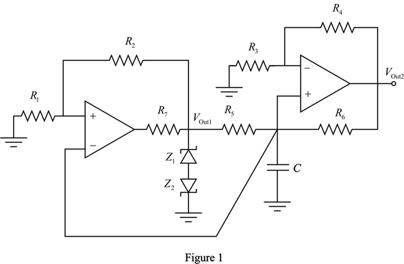
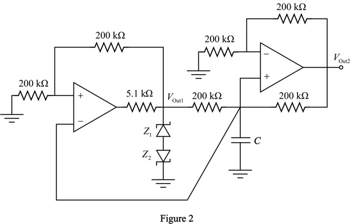
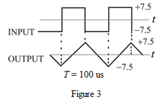

The output is the a square wave with peak amplitudes .
Here,
Since ,

Thus, the peak voltages of the square wave is .
Refer to Figure P17.33 in the text book for the inverting bistable multivibrator circuit.
Consider the bistable multivibrator circuit as shown in Figure 1.

The output is the a square wave with peak amplitudes .
Here,
Since ,
Thus, the peak voltages of the square wave is .
The square wave output with peak amplitude is given as input to the integrator. Hence, the output of the integrator is a triangular wave with peak amplitude  .
.
The resistances, .
Determine the Zener voltage .
Substitute 7.5 V for and 0.7 V for .
Thus, the Zener voltage is .
Determine the period T by substituting for f.
Thus, the time period of the output triangular waveform is .
The pulse width of the square wave is,
If a square wave is applied to an integrator, the output of the integrator is a triangular wave.
The capacitor charges and discharges to the upper and lower threshold values respectively.
The voltage across the capacitor is,
Therefore, the resistance values are,
.
Apply Kirchhoff’s current law to the output node of the bistable multivibrator circuit.

Therefore, the resistance is .
Consider the bistable multivibrator circuit as shown in Figure 2.

Draw the integrator output voltage waveform as shown in Figure 3.

Thus, the integrator output is a triangular wave with a period of and the peak amplitude of  .
.